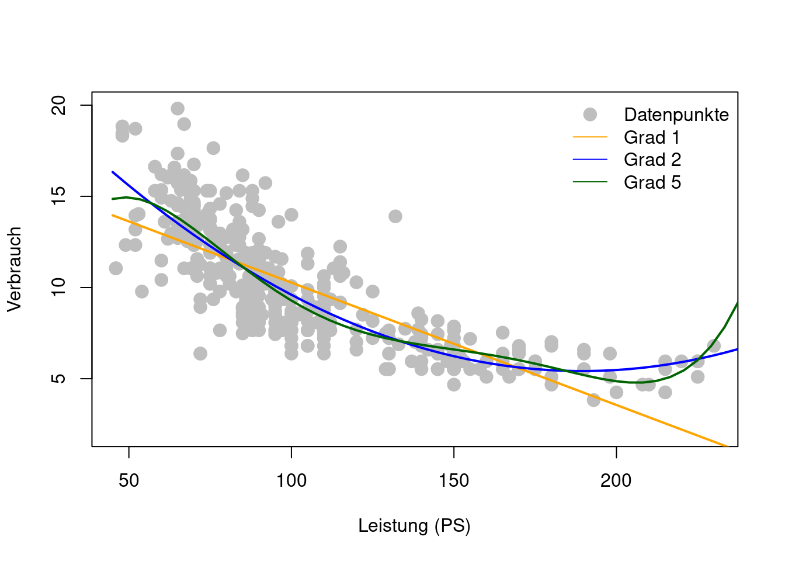
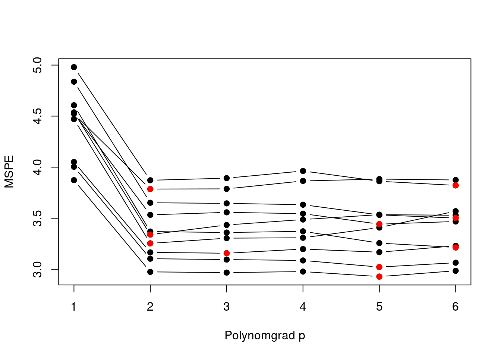
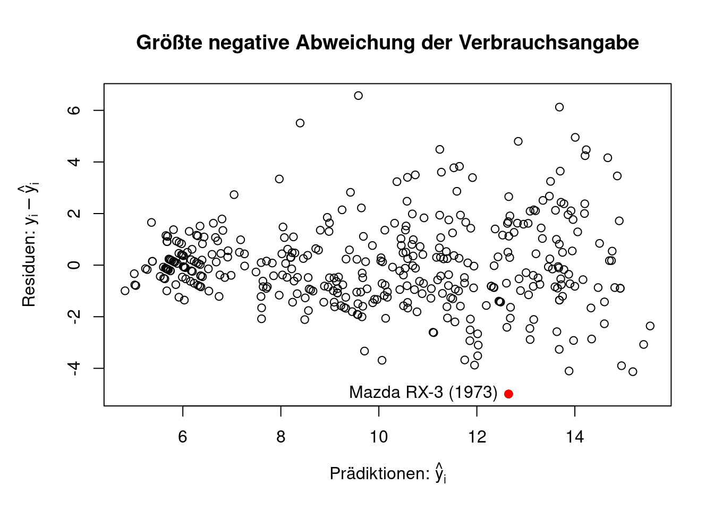

## Installieren
install.packages("tidyverse")
install.packages("GGally")
install.packages("ISLR2")
## Laden
library("tidyverse") # Viele nützliche Pakete zur Datenverarbeitung
library("GGally") # Pairs-Plot
library("ISLR2") # Enthält die Auto-Daten
data(Auto) # Macht die Auto-Daten abrufbar 2 Polynomregression
Lernziele für dieses Kapitel
Sie können …
- die Probleme der Auswahl eines geeigneten Polynomgrades erläutern.
- die Grundidee der Validierungsdaten-Methode erläutern.
- die Grundidee der k-fachen Kreuzvalidierung erläutern.
R-Pakete und Datenbeispiel für dieses Kapitel
Folgende R-Pakete werden in diesem Kapitel benötigt.
- tidyverse: Viele nützliche Pakete zur Datenverarbeitung.
- GGally: Enthält die Funktion
ggpairs()zur Erzeugung von Pairs-Plots - ISLR: Enthält die
AutoDaten
Falls noch nicht geschehen, müssen diese Pakete installiert und geladen werden:
Als Datenbeispiel für diese Kapitel betrachten wir den Auto Datensatz im R-Paket ISLR2. Wir betrachten folgende Auswahl der Variablen im Datensatz Auto:
- Zielvariable:
- Verbrauch (km/Liter)
- Prädiktorvariablen:
- Gewicht (kg): Schwerere Autos verbrauchen wahrscheinlich mehr.
- Leistung (PS): Höhere Leistung geht wohl auch mit höherem Verbrauch einher.
- Hubraum (ccm): Großer Hubraum … höherer Verbrauch?
Achtung: Es gibt sicherlich noch weitere relevante Prädiktorvariablen. Obige Auswahl ist jedoch relativ einfach zu erheben und ermöglicht eventuell bereits eine gute Prädiktion des Verbrauches im Rahmen eines Regressionsmodells.
Ziel: Wir wollen ein Prädiktionsmodell aus den Daten erlernen, welches und erlaubt, nach Auffälligkeiten bei den herstellerseitigen Verbrauchsangaben zu suchen. Besonders große Abweichungen zwischen Modellprädiktion und Herstellerangabe sind ein Indiz für unlautere Zahlenschönungen.
Aufbereitung der Daten:
## Auswahl und Aufbereitung der Variablen
Auto_df <- Auto %>%
mutate(Verbrauch = mpg * (1.60934/3.78541), # Verbrauch (km/Liter)
Gewicht = weight * 0.45359, # Gewicht (kg)
PS = horsepower, # Pferdestärken (PS)
Hubraum = displacement * 2.54^3 # Hubraum (ccm)
) %>%
dplyr::select("Verbrauch", "Gewicht", "PS", "Hubraum")
n <- nrow(Auto_df) # Stichprobenumfang Insgesamt enthält der betrachtete Datensatz also fünf Variablen zu \(n=392\) verschiedenen Autos. Dies sind die ersten sechs Zeilen des Datensatzes:
| Verbrauch (km/Liter) | Gewicht (kg) | Pferdestärken (PS) | Hubraum (ccm) |
|---|---|---|---|
| 7.65 | 1589.38 | 130 | 5030.83 |
| 6.38 | 1675.11 | 165 | 5735.47 |
| 7.65 | 1558.54 | 150 | 5211.09 |
| 6.80 | 1557.17 | 150 | 4981.67 |
| 7.23 | 1564.43 | 140 | 4948.89 |
| 6.38 | 1969.03 | 198 | 7030.05 |
Um sich einen Überblick zu den Beziehungen zwischen den Variablen zu verschaffen, eignet sich ein Pairs-Plot sehr gut (siehe Figure 2.1:
ggpairs(Auto_df,
upper = list(continuous = "density", combo = "box_no_facet"),
lower = list(continuous = "points", combo = "dot_no_facet"))
Der Pairs-Plot veranschaulicht alle paarweisen Zusammenhänge zwischen den Variablen im Datensatz Auto_df. Uns interessieren hierbei in erster Linie die Zusammenhänge zwischen der Zielvariable Verbrauch und den Prädiktorvariablen:
- \(Y=\)Verbrauch und …
- \(G=\) Gewicht\(_i\): haben einen nicht linearen, negativen Zusammenhang.
- \(P=\) PS: haben einen nicht linearen, negativen Zusammenhang.
- \(H=\) Hubraum: haben einen nicht linearen, negativen Zusammenhang.
2.1 Das allgemeine Regressionsmodell
Die einzelnen Prädiktorvariablen werden gerne kompakt zu einer multivariaten Prädiktorvariablen \(X=(X_1,X_2,\dots,X_p)\) zusammengefasst; in unserem Benzinverbrauchsbeispiel also \(X=(G,P,H,B).\) So lässt sich das allgemeines Regressionsmodell schreiben als \[ Y=f(X)+\varepsilon, \] wobei
- \(f\) den systematischen Zusammenhang zwischen der Zielvariable \(Y\) und den Prädiktorvariablen \(X\) beschreibt und
- \(\varepsilon\) ein Fehlerterm ist, dessen bedingter Mittelwert gegeben \(X\) gleich null ist, \[ E(\varepsilon|X)=0. \]
Daraus ergibt sich folgender Zusammenhang zwischen der allgemeinen Regressionsfunktion \(f\) und dem bedingten Mittelwert von \(Y\) gegeben \(X\): \[ E(Y|X)=E(\underbrace{f(X)+\varepsilon}_{=Y}|X)=f(X) \] Die Funktion \(f(X)\) beschreibt also den bedingten Mittelwert von \(Y\) gegeben \(X\) (siehe Figure 2.2 und Figure 2.3).

Figure 2.3 zeigt ein simuliertes Beispiel einer allgemeinen, bivariaten Regressionsbeziehung \[ Y=f(X)+\varepsilon\quad\text{mit}\quad X=(X_1,X_2). \]
Ziel ist es nun, die unbekannte Regressionsfunktion \(f\) aus den Daten zu erlernen.
2.2 Das Polynomregressionsmodell
Betrachten wir zunächst den Fall von einfachen Prädiktorvariable \(X\in\mathbb{R},\) z.B. \(X=\)PS.
Das Polynomregressionsmodell \[ f_p(X) = \beta_0 + \beta_1 X + \beta_2 X^2 + \dots + \beta_p X^p \tag{2.1}\] ist eine einfache Möglichkeit, die allgemeine Regressionsfunktion \(f(X)=E(Y|X)\) zu schätzen (lernen).
So kann, zum Beispiel, der nicht lineare Zusammenhang (Figure 2.1) zwischen Verbrauch und Leistung PS sehr flexibel als Polynomfunktion modelliert werden: \[
\texttt{Verbrauch}(\texttt{PS}) = \beta_0 + \beta_1 \texttt{PS} + \beta_2 \texttt{PS}^2 + \dots + \beta_p \texttt{PS}^p
\] Je höher der Grad \(p\) des Polynoms, desto flexibler ist ein Polynomregressionsmodell (Figure 2.4).
Das Polynomregressionsmodell (Equation 2.1) ist für alle Polynomgrade \(p\) ein lineares Regressionsmodell, denn es ist linear bezüglich der Modellparameter \(\beta_0, \beta_1, \dots, \beta_p\).
Für einen gegebenen Polynomgrad \(p\), lassen sich die unbekannten Modellparameter einfach mit Hilfe der Methode der kleinsten Quadrate schätzen: \[
\hat{f}_p(X) = \hat\beta_0 + \hat\beta_1 X + \hat\beta_2 X^2 + \dots + \hat\beta_p X^p
\] mit \[
\hat\beta = (\mathbb{X}'\mathbb{X})^{-1}\mathbb{X}'\mathbb{Y},
\]
wobei \[
\begin{align*}
\hat\beta=\left(
\begin{matrix}
\hat{\beta}_0\\
\hat{\beta}_1\\
\vdots\\
\hat{\beta}_p
\end{matrix}
\right),
\quad
\mathbb{X}=\left(\begin{matrix}
1 &x_{1}&x_{1}^2&\dots & x_{1}^p\\
\vdots&\vdots&\vdots & \ddots & \vdots \\
1 &x_{n}&x_{n}^2&\dots & x_{n}^p\\
\end{matrix}\right)
\quad
\text{und}
\quad
\mathbb{Y}=\left(
\begin{matrix}
y_1\\
\vdots\\
y_n
\end{matrix}
\right).
\end{align*}
\]
## Polynom Regressionen
polreg_1 <- lm(Verbrauch ~ poly(PS, degree = 1, raw=TRUE), data = Auto_df)
polreg_2 <- lm(Verbrauch ~ poly(PS, degree = 2, raw=TRUE), data = Auto_df)
polreg_5 <- lm(Verbrauch ~ poly(PS, degree = 5, raw=TRUE), data = Auto_df)
## Data-Frame zum Abspeichern der Prädiktionen
plot_df <- tibble("PS" = seq(45, 250, len=50))
## Abspeichern der Prädiktionen
plot_df$fit_1 <- predict(polreg_1, newdata = plot_df)
plot_df$fit_2 <- predict(polreg_2, newdata = plot_df)
plot_df$fit_5 <- predict(polreg_5, newdata = plot_df)
## Ploten
plot(Verbrauch ~ PS, data = Auto_df, ylim=c(2,20),
xlab="Leistung (PS)", pch=21, col="gray", bg="gray", cex=1.5)
with(plot_df, lines(x = PS, y = fit_1, lwd=2, col="orange"))
with(plot_df, lines(x = PS, y = fit_2, lwd=2, col="blue"))
with(plot_df, lines(x = PS, y = fit_5, lwd=2, col="darkgreen"))
legend("topright", lty=c(NA,1,1,1), pch=c(21,NA,NA,NA),
col=c("gray","orange","blue","darkgreen"), pt.bg="gray", pt.cex=1.5,
legend=c("Datenpunkte", "Grad 1", "Grad 2", "Grad 5"), bty="n")
2.3 Überanpassung
Zusätzlich zur Schätzung der Modellparameter besteht hier nun das Problem der Wahl des Grades \(p\) des Polynoms als weiteren Modellparameter \[ \begin{align*} y_i %& =\hat{\beta}_0 + \hat{\beta}_1 x_{i1} + \hat{\beta}_2 x_{i1}^2 + \dots + \hat{\beta}_p x_{i1}^p + e_i & =\beta_0 + \beta_1 x_{i1} + \beta_2 x_{i1}^2 + \dots + \beta_p x_{i1}^p + \varepsilon_i\\ & =\sum_{j=1}^p\beta_j x_{i1}^j + \varepsilon_i \end{align*} \] Wenn man jedoch versucht, alle Modellparameter (also \(\beta_0, \beta_1, \dots, \beta_p\) und \(p\)) durch Minimieren der Residuen-Quadratsumme (Residual Sum of Squares, RSS) \[ \operatorname{RSS}_p=\sum_{i=1}^n\left(y_i - \sum_{j=0}^p\hat{\beta}_jx_{i1}^j\right)^2 \] zu schätzen, so ergibt sich ein Problem das als Überanpassung (Overfitting) bekannt ist (Figure 2.5). Das Polynomregressionsmodell ist so flexibel, dass es den einzelnen Trainingsdaten \((x_i,y_i)\) folgen kann.
Problem der Methode der kleinsten Quadrate
Das Minimieren der RSS ist äquivalent zum Minimieren des mittleren quadratischen Fehlers bzgl. der Trainingsdaten \[ \frac{1}{n}\operatorname{RSS}_p=\frac{1}{n}\sum_{i=1}^n\left(y_i - \hat{f}_p(x_i)\right)^2, \] wobei \((y_i,x_i),\) \(i=1,\dots,n,\) hier die beobachteten Trainingsdaten bezeichnet.
Je hoher der Polynomgrad \(p,\) desto flexibler wird \(\hat{f}_p(x_i),\) sodass sich \(\hat{f}_p(x_i)\) den Beobachtungen \(y_i\) annähern kann \[ y_i \approx \hat{f}_p(x_i). \] Dies erklärt die Beobachtung aus Figure 2.5, dass \(\operatorname{RSS}_p\) monoton fallend ist in \(p,\) also \[ \operatorname{RSS}_p\geq \operatorname{RSS}_{p'}\quad\text{für}\quad p < p'. \]
Damit erlernt \(\hat{f}_p(x_i)\) von \(y_i\)
- den erwünschten Teil \(f(x_i)\)
- aber auch den unerw√ºnschten Fehlerterm \(\varepsilon_i\) üò≠
Das erlernte Modell \(\hat{f}_p(x_i)\) ist fehlerbehaftet, d.h. \(\hat{f}_p(x_i)\not\approx f(x_i).\)
Mittlerer quadratischer Fehlers bzgl. Testdaten
Um eine Überanpassung an die Trainingsdaten zu verhindern, müss man die Prädiktionsgüte von \(\hat{f}_p(x_i)\) mit Hilfe neuer Testdaten überprüfen.
Eine häufig betrachtete Größe ist der mittlere quadrierte Prädiktionsfehler (mean squared prediction error, MSPE) \[ \operatorname{MSPE}^{Test}_p=\frac{1}{m}\sum_{i=1}^m\left(y^{Test}_i - \hat{f}_p(x^{Test}_i)\right)^2, \] wobei
- \((y^{Test}_i,x^{Test}_i),\) \(i=1,\dots,m\) die Testdaten bezeichnet,
- \(\hat{f}_p\) jedoch auf Basis der Trainingsdaten (kleinste Quadrate Methode) berechnet wurde.
Die Trainings- und Testdaten müssen voneinander unabhängig sein, sodass \[ \begin{align*} &\operatorname{MSPE}^{Test}_p =\frac{1}{m}\sum_{i=1}^m\left(y^{Test}_i - \hat{f}_p(x^{Test}_i)\right)^2\\ &=\frac{1}{m}\sum_{i=1}^m\left((f(x^{Test}_i)+\varepsilon^{Test}_i) - \hat{f}_p(x^{Test}_i)\right)^2\\ &=\underbrace{\frac{1}{m}\sum_{i=1}^m\left(f(x^{Test}_i)-\hat{f}_p(x^{Test}_i)\right)^2}_{\approx E\left(\left(f(X)-\hat{f}_p(X)\right)^2\right)}\\ &\;\;\;+\underbrace{\frac{1}{m}\sum_{i=1}^m\left(\varepsilon_i^{Test}\right)^2}_{\approx \operatorname{Var}(\varepsilon)} -\underbrace{\frac{1}{m}\sum_{i=1}^m\varepsilon_i^{Test}\hat{f}_p(x^{Test}_i)}_{\approx 0}\\ &\approx E\left(\left(f(X)-\hat{f}_p(X)\right)^2\right) + \operatorname{Var}(\varepsilon) \end{align*} \]
Die Minimierung von \(\operatorname{MSPE}^{Test}_p\) bzgl \(p\) entspricht also (approximativ für große \(m\)) einer Minimierung von \[ E\left(\left(f(X)-\hat{f}_p(X)\right)^2\right). \]
\(\operatorname{MSPE}^{Test}_p\) stellt damit ein korrigiertes kleinste Quadrate Kriterium dar, welches eine Anpassung an die Fehlerterm \(\varepsilon_i\) verhindert.
2.4 Resampling Methoden zur Modellauswahl
2.4.1 Die Validierungsdaten-Methode
Da die Minimierung der Trainingsdaten-RSS schnell zu einem Problem der Überanpassung führt, benötigen wir eine alternative Methode, um die Güte des geschätzten Modells zu prüfen. Die einfachste Idee ist dabei die beobachteten Daten \[ (x_i,y_i),\quad i\in\mathcal{I}=\{1,2,\dots,n\} \] in einen Satz von Trainingsdaten \[ \left\{(x_{1}^{Train},y_{1}^{Train}),\dots,(x_{n_{Train}}^{Train},y_{n_{Train}}^{Train})\right\}=\{(x_i,y_i):i\in\mathcal{I}^{Train}\} \] und einen separaten (disjunkten) Satz von Validierungsdaten \[ \left\{(x_{1}^{Valid},y_{1}^{Valid}), \dots,(x_{n_{Valid}}^{Valid},y_{n_{Valid}}^{Valid})\right\}=\{(x_i,y_i):i\in\mathcal{I}^{Valid}\} \] zu teilen mit \[ \overbrace{|\mathcal{I}|}^{=n}=\overbrace{|\mathcal{I}^{Train}|}^{=n_{Train}}+\overbrace{|\mathcal{I}^{Valid}|}^{=n_{Valid}}, \] sodass \(\mathcal{I}^{Train}\cap\mathcal{I}^{Valid} = \emptyset\)
Folgender Code-Schnipsel ermöglicht solch eine (zufällige) Aufteilung der Daten in Trainings- und Validierungsdaten:
n <- nrow(Auto_df) # Stichprobenumfang
n_Train <- 200 # Stichprobenumfang der Trainingsdaten
n_Valid <- n - n_Train # Stichprobenumfang der Validierungsdaten
## Index-Mengen zur Auswahl der
## Trainings- und Validierungsdaten
I_Train <- sample(x = 1:n, size = n_Train, replace = FALSE)
I_Valid <- c(1:n)[-I_Train]
## Trainingsdaten
Auto_Train_df <- Auto_df[I_Train, ]
## Validierungsdaten
Auto_Valid_df <- Auto_df[I_Valid, ]Obschon die Validierungsdaten-Methode auf alle Regressionsmodelle angewandt werden kann, veranschaulichen wir im Folgenden die Methode anhand der Polynomregression.
Die Aufteilung der Daten in Trainings- und Validierungsdaten ermöglicht uns nun ein zweistufiges Verfahren:
Schritt 1: Mit Hilfe der Trainingsdaten wird das Polynomregressionsmodell geschätzt: \[ \begin{align*} y^{Train}_i %&=\hat{f}^{Train}_p(x_i^{Train}) + e_i^{Train}\\ &=\hat{\beta}_0^{Train} + \hat{\beta}_1^{Train} x_{i}^{Train} + \hat{\beta}_2^{Train} (x_{i}^{Train})^2 + \dots + \hat{\beta}_p^{Train} (x_{i}^{Train})^p + e_i^{Train} \end{align*} \] Code-Schnipsel Beispiel:
Train_polreg <- lm(Verbrauch ~ poly(PS, degree = p, raw=TRUE), data = Auto_Train_df)Schritt 2: Mit Hilfe der Validierungsdaten wird das geschätzte Polynomregressionsmodell validiert: \[ \begin{align*} \hat{y}^{Valid}_i %&=\hat{f}_p^{Train}(x_i^{Valid})+ e_i^{Valid}\\ &=\hat{\beta}_0 + \hat{\beta}_1^{Train} x_{i}^{Valid} + \hat{\beta}_2^{Train} (x_{i}^{Valid})^2 + \dots + \hat{\beta}_p^{Train} (x_{i}^{Valid})^p, \end{align*} \] indem man den mittleren quadratischen Prädiktionsfehler (Mean Squared Prediction Error MSPE) berechnet: \[ \begin{align*} \text{MSPE} &=\frac{1}{n_{Valid}}\text{RSS}_{Valid}\\ &=\frac{1}{n_{Valid}}\left((y_1^{Valid} - \hat{y}_1^{Valid})^2 +\dots + (y_{n_{Valid}}^{Valid} - \hat{y}_{n_{Valid}}^{Valid})^2\right) \end{align*} \] Code-Schnipsel Beispiel:
y_fit_Valid <- predict(Train_polreg, newdata = Auto_Valid_df)
RSS_Valid <- sum( (Auto_Valid_df$Verbrauch - y_fit_Valid)^2 )
MSPE <- RSS_Valid / n_ValidMan wiederholt obige Schritte für eine Auswahl von verschiedenen Polynomgraden \(p=1,2,\dots,p_{\max}\), z.B. \(p_{\max}=10\), und berechnet für jeden dieser Fälle den \(\operatorname{MSPE}\), also: \[
\operatorname{MSPE}\equiv\operatorname{MSPE}(\hat{\beta}_0, \hat{\beta}_1, \dots, \hat{\beta}_p,p),\quad\text{für jedes}\quad p=1,2,\dots,p_{\max}
\] Der \(\operatorname{MSPE}\) ist eine Schätzung des wahren, unbekannten mittleren quadratischen Prädiktionsfehlers \(E\left[(Y-\hat{Y})^2\right]\),
\[
\operatorname{MSPE}(\hat{\beta}_0, \hat{\beta}_1, \dots, \hat{\beta}_p,p)\approx E\left[(Y-\hat{Y})^2\right].
\] Die Minimierung des \(\operatorname{MSPE}\) über verschiedene Werte des Polynomgrades \(p=1,2,\dots\) erlaubt es uns den reduzierbaren Prädiktions-Fehler der Polynomregression zu minimieren.
Folgender R-Code verbindet nun alle Schritte und berechnet den \(\operatorname{MSPE}\) für verschiedene Werte des Polynomgrades \(p\). Dasjenige Modell, welches den \(\operatorname{MSPE}\) minimiert, ist laut der Daten das beste Prädiktionsmodell.
set.seed(31)
##
n <- nrow(Auto_df) # Stichprobenumfang
n_Train <- 200 # Stichprobenumfang der Trainingsdaten
n_Valid <-n - n_Train # Stichprobenumfang der Validierungsdaten
## Index-Mengen zur Auswahl der
## Trainings- und Validierungsdaten
I_Train <- sample(x = 1:n, size = n_Train, replace = FALSE)
I_Valid <- c(1:n)[-I_Train]
## Trainingsdaten
Auto_Train_df <- Auto_df[I_Train, ]
## Validierungsdaten
Auto_Valid_df <- Auto_df[I_Valid, ]
p_max <- 6
MSPE <- numeric(p_max)
fit_plot <- matrix(NA, 50, p_max)
for(p in 1:p_max){
## Schritt 1
Train_polreg <- lm(Verbrauch ~ poly(PS, degree = p, raw=TRUE),
data = Auto_Train_df)
## Schritt 2
y_fit_Valid <- predict(Train_polreg, newdata = Auto_Valid_df)
RSS_Valid <- sum( (Auto_Valid_df$Verbrauch - y_fit_Valid)^2 )
MSPE[p] <- RSS_Valid / n_Valid
## Daten für's plotten
fit_plot[,p] <- predict(Train_polreg, newdata = plot_df)
}
Achtung: Auch eine Modellauswahl ist fehlerhaft und stellt lediglich eine Schätzung (mit Schätzfehlern) des besten Prädiktionsmodelles innerhalb der betrachteten Klasse von Prädiktionsmodellen (hier Polynomregressionen) dar.
Figure 2.6 zeigt jedoch ein Problem der Validierungsdaten-Methode. Die Trainingsdaten und die Validierungsdaten haben kleinere Stichprobenumfänge (\(n_{Train}<n\) und \(n_{Valid}<n\)) was zu einer erhöhten Schätzgenauigkeit in der MSPE-Schätzung führt.

2.4.2 k-Fache Kreuzvalidierung
Die \(k\)-fache (z.B. \(k=5\) oder \(k=10\)) Kreuzvalidierung ist eine Vorgehensweise zur Bewertung der Leistung einer Schätzprozedur (Algorithmus) im Kontext des maschinellen Lernens. Als Schätzprozedur verwenden wir wieder das Beispiel der Polynomregression mit unbekanntem Polynomgrad \(p\), welcher zusammen mit den Modellparametern \(\beta_0,\beta_1,\dots,\beta_p\) aus den Daten erlernt werden muss.
Die \(k\)-fache Kreuzvalidierung stellt eine Verbesserung der Validierungsdaten-Methode dar, da sie faktisch die Stichprobenumfänge in den Trainingsdaten und Validierungsdaten erhöht. Wie bei der Validierungsdaten-Methode wird der Datensatz in Trainings- und Validierungsdaten aufgeteilt – jedoch \(k\)-fach. Figure 2.7 zeigt ein Beispiel der Datenaufteilung bei der \(5\)-fachen Kreuzvalidierung.
Folgender Code-Schnipsel ermöglicht eine (zufällige) Aufteilung der Daten in \(k\) verschiedene Trainings- und Validierungsdaten:
n <- nrow(Auto_df) # Stichprobenumfang
k <- 5 # 5-fache Kreuzvalidierung
## Index zur Auswahl k verschiedener
## Trainings- und Validierungsdaten:
folds <- sample(x = 1:k, size = n, replace=TRUE)
## Trainingsdaten im j-ten (j=1,2,...,k) Durchgang
Auto_df[folds != j,]
## Validierungsdaten im j-ten (j=1,2,...,k) Durchgang
Auto_df[folds == j,]Für jede der \(k\) Datenaufteilungen wird der \(\operatorname{MSPE}\) berechnet. Der Mittelwert dieser MSPE-Werte wird häufig als \(\operatorname{CV}_{(k)}\) Wert (crossvalidation score) bezeichnet \[ \operatorname{CV}_{(k)}=\frac{1}{k}\sum_{j=1}^k\operatorname{MSPE}_j \]
Der \(\operatorname{CV}_{(k)}\)-Wert stellt eine im Vergleich zur Validierungsdaten-Methode verbesserte Schätzung des unbekannten mittleren quadratischen Pädiktionsfehlers \(\operatorname{CV}_{(k)}\approx E[(Y-\hat{Y})^2]\) dar. Die Modellauswahl folgt also auch hier mittels Minimierung des \(\operatorname{CV}_{(k)}\)-Wertes über die verschiedene Werte des Polynomgrades \(p=1,2,\dots\).
Wahl von \(k\): In der Praxis haben sich die Werte \(k=5\) und \(k=10\) etabliert, da diese Größenordnunen einen guten Kompromiss zwischen der Varianz und der Verzerrung des Schätzers \(\operatorname{CV}_{(k)}\) für \(E[(Y-\hat{Y})^2]\) darstellen.
2.5 Anwendung: Vorhersage des Benzinverbrauchs (Fraud Detection)

Nun haben wir das Werkzeug, um die nicht linearen Zusammenhänge zwischen der Zielvariable \(Y=\)Verbrauch und den Prädiktorvariablen \(G=\)Gewicht, \(P=\)PS und \(H=\)Hubraum im Datensatz Auto_df zu berücksichtigen (siehe Figure 2.1) und allein mit Hilfe der Daten zu erlernen. Wir folgen hier der Herangehensweise des maschinellen Lernens und lassen die Daten für sich selbst sprechen.
Da Figure 2.1 sehr ähnliche Zusammenhänge zwischen der Zielvariable \(Y=\)Verbrauch und den Prädiktorvariablen \(G=\)Gewicht, \(P=\)PS und \(H=\)Hubraum vermuten lässt, betrachten wir zunächst ein vereinfachtest Polynomregressionsmodell, bei dem für alle Prädiktorvariablen der gleiche Polynomgrad \(p\) verwendet wird.
\[
\begin{align*}
Y_i = \beta_0 + \notag
& \beta^G_{1} G_i + \beta^G_{2} G_i^2 + \dots + \beta^G_{p} G_i^p + \\
& \beta^P_{1} P_i + \beta^P_{2} P_i^2 + \dots + \beta^P_{p} P_i^p + \\
& \beta^H_{1} H_i + \beta^H_{2} H_i^2 + \dots + \beta^H_{p} H_i^p + \varepsilon_i
\end{align*}
\]
Folgender R-Code (Algorithmus) erlernt aus den Daten, mit Hilfe der \(5\)-fachen Kreuzvalidierung \(\operatorname{CV}_{(5)}\approx E[(Y-\hat{Y})^2]\), den optimalen Polynomgrad \(p\).
set.seed(8) # Seed für den Zufallsgenerator
n <- nrow(Auto_df) # Stichprobenumfang
k <- 5 # 5-fache Kreuzvalidierung
p_max <- 5 # Maximaler Polynomgrad
folds <- sample(x = 1:k, size = n, replace=TRUE)
## Container für die MSPE-Werte
## für alle j=1,...,k Kreuzvalidierungen und
## für alle p=1,...,p_max Polynomgrade
MSPE <- matrix(NA, nrow = k, ncol = p_max,
dimnames=list(NULL, paste0("p=",1:p_max)))
for(p in 1:p_max){
for(j in 1:k){
## Modelschätzung auf Basis j-ten Traininsdaten Auto_df[folds != j,]
poly_fit <- lm(Verbrauch ~
poly(Gewicht, degree = p, raw = TRUE) +
poly(PS, degree = p, raw = TRUE) +
poly(Hubraum, degree = p, raw = TRUE),
data=Auto_df[folds != j,])
## Prädiktion auf Basis j-ten Validierungsdaten Auto_df[folds == j,]
pred <- predict(poly_fit, newdata = Auto_df[folds == j,])
##
MSPE[j,p] <- mean( (Auto_df$Verbrauch[folds==j] - pred)^2 )
}
}
## CV-Wert für alle p=1,...,p_max Polynomgrade
CV_k <- colMeans(MSPE)
## Plotten
plot(y = CV_k, x = 1:length(CV_k), pch=21, col="black", bg="black",
type='b', xlab="Polynomgrad p", ylab=expression(CV[(5)]), log="y")
points(y = CV_k[which.min(CV_k)],
x = c(1:length(CV_k))[which.min(CV_k)],
col = "red", bg = "red", pch = 21)
Auch der \(5\)-fache Kreuzvalidierungswert \(\operatorname{CV}_{(5)}\) ist lediglich eine zufallsbehaftete Schätzung des unbekannten mittleren quadratischen Prädiktionsfehlers \(E[(Y-\hat{Y})^2]\). Um eine Idee von der Präzision und Stabilität der Modellauswahl mittels der Minimierung von \(\operatorname{CV}_{(5)}\) zu bekommen, können wir die zufälligen, \(5\)-fachen Aufteilungen der Daten in Trainins- und Validierungsdaten wiederholen und den Effekt alternativer Datenaufteilungen betrachten. Figure 2.9 zeigt, dass die Minimierung des Kreuzvalidierungswertes \(\operatorname{CV}_{(5)}\) auch in Wiederholungen häufig das Modell mit Polynomgrad \(p=2\) auswählt. Der Polynomgrad \(p=2\) scheint also eine vertauenswürde Modellauswahl darzustellen.

Das Polynomregressionsmodell mit \(p=2\) stellt also ein gutes Prädiktionsmodell dar. Wir verwenden nun dieses Modell, um nach auffälligen Unterschiedenen in den herstellerseitigen Verbrauchsangaben \(y_i\) und unseren Prädiktionen zu suchen. Gerade stark negative Residuen \(y_i-\hat{y}_i\) sind verdächtig, da es auf eine Schönung der Verbrauchsangaben hindeuten könnte.
Folgender R-Code schätzt zunächst das Polynomregressionsmodell mit \(p=2\), berechnet dann die Residuen \(y_i-\hat{y}_i\) und veranschaulicht die größte negative Abweichung in Figure 2.10.
p <- 2
poly_fit <- lm(Verbrauch ~
poly(Gewicht, degree = p, raw = TRUE) +
poly(PS, degree = p, raw = TRUE) +
poly(Hubraum, degree = p, raw = TRUE),
data=Auto_df)
## Position des größten negativen Residuums:
slct <- order(resid(poly_fit))[1]
## Gehört zum Mazda RX-3 (Bj. 1973)
## Auto[slct, ]
par(mar=c(5.1, 5.1, 4.1, 2.1))
plot(y = resid(poly_fit), x = fitted(poly_fit),
ylab = expression("Residuen:"~y[i] - hat(y)[i]),
xlab = expression("Prädiktionen:"~hat(y)[i]),
main="Größte negative Abweichung der Verbrauchsangabe")
points(y = resid(poly_fit)[slct], x = fitted(poly_fit)[slct],
col = "red", bg = "red", pch = 21)
text(y = resid(poly_fit)[slct], x = fitted(poly_fit)[slct],
labels = "Mazda RX-3 (1973)", pos = 2)
par(mar=c(5.1, 4.1, 4.1, 2.1))
Wir haben hier tatsächlich einen besonderen Fall gefunden. Der Mazda RX-3 (1973) (Figure 2.11) lief mit einem sehr sparsamen Wankelmotor. Dieser Motor war sogar so außergewöhnlich sparsam, dass es vielerlei Streitigkeiten um die vermeintlich zu niedrigen Verbrauchsangaben gab.